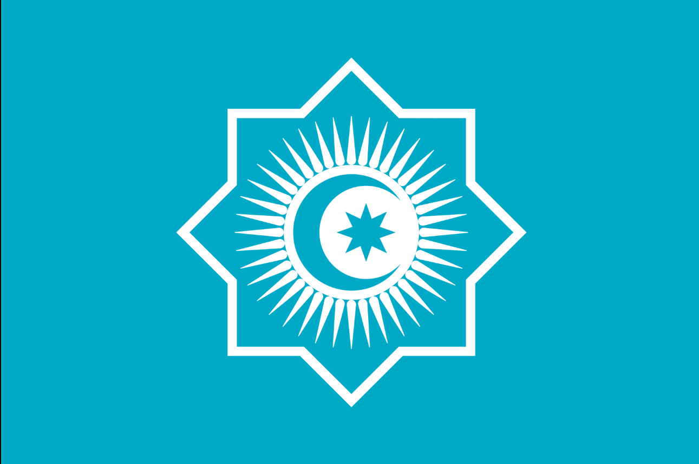

Land of All Turks

The color of Tengri — the sky and ancient god of the Turks.
Ancient Turkic symbol of statehood.
Life, light and energy. 40 rays — symbol of completeness.
Growth and aspiration to the future.
All Turkic peoples who could join the Turkic Family
About 40 Turkic peoples live from Yakutia to the Balkans
In the 6th–8th centuries, the Turkic Khaganate existed.
Land of nomadic Turkic peoples.
In 2009, the Organization of Turkic States (OTS) was created.
History of the Turks from the Khaganate to the OTS
The first great Turkic state, founded by Bumin Qaghan.
The ancestors of the Tatars and Chuvash adopted Islam.
Turks moved to Anatolia and founded the Seljuk, then the Ottoman Empire.
Ivan Yakovlev created the modern Chuvash alphabet based on Cyrillic.
Azerbaijan, Kazakhstan, Kyrgyzstan, Uzbekistan and Turkmenistan became independent.
The OTS was founded to strengthen cooperation.
A new common flag was adopted.
People who shaped the Turkic world
Founder and first president of the Republic of Turkey (1881–1938).
Great Tatar poet, founder of modern Tatar literature (1886–1913).
Chuvash enlightener, creator of the modern Chuvash alphabet (1848–1930).
Legendary Red Army commander of the Civil War (1887–1919).
Chuvash cosmonaut, twice Hero of the Soviet Union (1929–2004).
World-famous Chuvash ballerina, prima of the Bolshoi Theatre.
Gods and symbols of the ancient Turks
The supreme sky god. The blue color of the Turkic flags comes from him.
Goddess of fertility and childbirth, protector of women and children.
God of the underworld, ruler of the dead.
The she-wolf who saved the last Turkic boy. Ancestress of the Ashina clan.
Clan signs of Turkic peoples
The tamga of the Kayı tribe, from which the Ottoman dynasty descended.
A common tamga among the Tatars, similar to a cross or bow.
Chuvash tamgas often look like a tree, a rake, or a house.
Each Kazakh zhuz and clan has its own tamga.
Common celebrations of the Turkic world
Spring New Year, celebrated on March 21.
Tatar and Bashkir summer festival of the plough.
Chuvash spring festival marking the end of sowing.
Turkic spring festival on May 5–6.
Common words in 12 Turkic languages
| Word | 🇹🇷 Türkçe | 🇦🇿 Azərb. | 🇰🇿 Қазақша | 🇺🇿 Oʻzbekcha | 🇰🇬 Кыргызча | 🇹🇲 Türkmençe | 🏳️ Татарча | 🏳️ Башҡортса | 🏳️ Чӑвашла | 🏳️ Саха тыла |
|---|---|---|---|---|---|---|---|---|---|---|
| Water | su | su | су | suv | суу | suw | су | һыу | шыв | уу |
| Sky | gök | göy | көк | ko'k | көк | gök | күк | күк | тӳпе | халлаан |
| Earth | yer | yer | жер | yer | жер | ýer | җир | ер | çĕр | сир |
| Sun | güneş | günəş | күн | quyosh | күн | gün | кояш | ҡояш | хĕвел | күн |
| Moon | ay | ay | ай | oy | ай | aý | ай | ай | уйăх | ый |
| Star | yıldız | ulduz | жұлдыз | yulduz | жылдыз | ýyldyz | йолдыз | йондоҙ | çăлтăр | сулус |
| Fire | ateş | od | от | olov | от | ot | ут | ут | вут | уот |
| House | ev | ev | үй | uy | үй | öý | өй | өй | çурт | дьиэ |
| Wolf | kurt | qurd | қасқыр | bo'ri | карышкыр | möjek | бүре | бүре | кашкăр | бөрө |
| One | bir | bir | бір | bir | бир | bir | бер | бер | пĕр | биир |
| Two | iki | iki | екі | ikki | эки | iki | ике | ике | икĕ | икки |
| Three | üç | üç | үш | uch | үч | üç | өч | өс | виçĕ | үс |
Three scripts used by Turkic peoples
Used by Turkey, Azerbaijan, Turkmenistan, Uzbekistan. Also in Kazakhstan (transition).
Used by Kazakhstan (until 2025), Kyrgyzstan, Tatarstan, Bashkortostan, Chuvashia, Yakutia.
Used by Uyghurs, Iranian Turks, and historically by all Muslim Turkic peoples.
Number of Turkic people in each country
The Turkic world stretches over 8000 km
| Parameter | Value |
|---|---|
| Name | Turkic Family |
| Population | ~200 million people |
| Territory | From Yakutia to Turkey |
| Language family | Altaic (Turkic branch) |
| Largest city | Istanbul |
| Flag | Turquoise, with octagon, sun, crescent and star |
| Motto | "One people — one sky" |